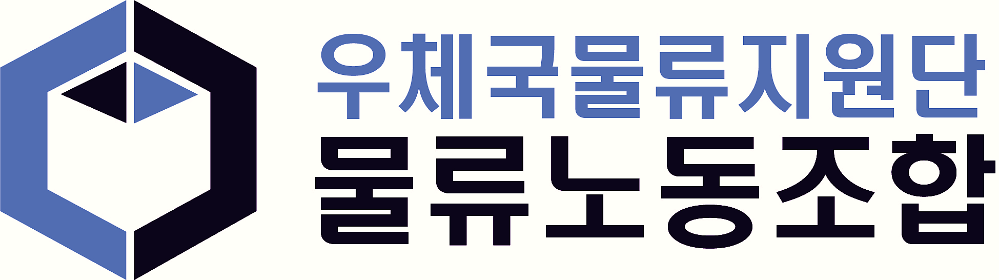

202603 운영위원회 회의록
1. 회의 개요
| 구분 | 내용 |
|---|---|
| 일시 | 2026년 3월 6일 (금) 15:30 |
| 장소 | 동서울 우편집중국 소회의실 |
| 참석 | 김영문(위원장), 박희덕, 송현동, 성소옥, 신성훈, 심영훈, 윤효종, 이도희, 이현준, 추교섭, 홍석민(소통간사), 배정필(감사) |
| 참관 | 오상현, 장대석 |
이번 운영위원회에서는 다음 세 가지 핵심 문제를 중심으로 논의가 이루어졌습니다.
1. 현장 인력 부족과 '알바 쪼개기 계약' 문제
2. 단시간 노동자 병가 차별 문제
3. 고용 안정 및 조합 권리 확보를 위한 대응 방향
2. 현장에서 벌어지고 있는 주요 문제
① 기간제 계약 종료와 단기 알바 중심 인력 운영
최근 가을걷이 기간제 노동자들이 계약 해지되고, 그 자리를 단기 알바로 대체하는 방식이 확대되고 있습니다.
사측은 4대 보험 가입 의무와 퇴직금 지급을 회피하기 위해 14일 단위 또는 한 달 쪼개기 계약을 반복하고 있으며, 이로 인해 현장에서 다음과 같은 문제가 발생하고 있습니다.
- 숙련 노동자 공백 발생
- 단기 인력의 잦은 교체 ('회전문식 고용')
- 기존 공무직 노동자의 신규 인력 교육 부담 증가
- 현장 노동 강도 상승 및 정신적·육체적 피로 심화
특히 인력 운영의 권한 구조가 이원화되어 있어, 공무직 TO 및 기간제 계약 권한은 우정사업본부(본사)가 독점하는 반면 현장 알바 운영 권한만 사업소장에게 위임되어 있습니다. 사측은 이를 이용해 인력 부족 문제를 '본사 소관'과 '사업소 권한'으로 서로 떠넘기는 방식으로 책임을 회피하고 있습니다.
운영위원회에서는 이러한 인력 운영 방식이 현장 노동을 불안정하게 만드는 구조적 문제라고 판단했습니다.
② 단시간 노동자 병가 차별 문제
최근 지원단과 교섭대표노동조합이 체결한 「2025년도 노사협정서」에 담긴 단시간 근로자에 대한 병가 산정 방식은, 동일한 노동을 수행하는 8시간 근무자와 달리 단시간 노동자에게만 유급 병가를 불허하는 명백한 차별이자 근로자의 건강권 침해로 판단되었습니다.
이에 따라 노동위원회를 통한 차별 시정 신청을 진행하기로 결정했습니다.
③ 부평 사업소 폭행 사건 및 인사 특혜 문제
부평 물류사업소에서 발생했던 직원 간 폭행 사건과 관련하여
- 가해자에게 벌금형(70만 원)이 확정되었지만
- 사측 감사실이 피해자의 퇴사를 빌미로 징계 절차를 중단한 상황
이는 명백한 가해자 비호이자 직무유기로, 노조 차원에서 다음을 진행하기로 했습니다.
- 감사실에 징계위원회 개최 요구
- 본사 공식 문제 제기
또한 특정 인원이 퇴사와 재입사를 반복하며 원하는 보직만 차지하는 인사 특혜 의혹에 대해서도 센터장 면담을 통해 강력히 문제를 제기하기로 했습니다.
3. 위원장 면담 결과
위원장은 최근 국내물류사업실장과의 면담 결과를 다음과 같이 보고했습니다.
상여금 문제
- 올해 인상은 어렵다는 입장
- 내년 예산 반영 가능성 언급
기간제 고용 문제
- 예산 문제로 신규 채용 확대는 어렵다는 답변
- 일부 기간제 인력 공무직 전환 검토 가능성 언급
사측은 '검토하겠다'는 답변을 반복하고 있으나, 구체적인 계획은 제시되지 않았습니다.
4. 운영위원회 주요 결정 사항
이번 회의에서는 다음과 같은 대응 방향을 결정했습니다.
① 병가 차별 시정 신청 진행
단시간 노동자 병가 차별 문제에 대해 인천지방노동위원회 차별 시정 신청을 진행합니다.
전략은 다음과 같습니다.
- 월 임금 300만 원 이하 조합원 1인이 대표 신청 (국선 노무사 무료 지원 활용)
- 동료 노동자 연대 서명 첨부
이를 통해 현장 전체의 구조적·집단적 차별 문제임을 공식적으로 제기하고, 확보된 법적 판례를 조직 확대의 교두보로 삼을 계획입니다.
② 기자회견 등 대외 대응 준비
다음 문제에 대해 사측에 기한부 공식 요구를 전달하기로 했습니다.
- 알바 쪼개기 계약 문제
- 기간제 고용 불안
- 노조 사무실 미제공
실질적인 결정권자인 우정사업본부를 직접 타격하는 것을 원칙으로 하며, 현 정부의 공공기관 비정규직 보호 기조와 우본의 변칙 계약 실태 간의 괴리를 부각하는 방향으로 여론전을 전개할 예정입니다.
사측이 기한 내 해결 의지를 보이지 않을 경우, 3월 말 ~ 4월 초 기자회견 등 대외 행동을 강행할 계획입니다.
③ 노조 사무실 확보
수년간 이행되지 않은 노조 사무실 제공 약속에 대해, 기한 내 확답이 없을 경우 고용노동청 고발 조치를 진행하기로 했습니다.
5. 연대 노동조합 활동
우정사업본부 공무직노조에서 근속 인정 소송 항소심을 진행하고 있습니다.
현재 상황
- 참여 조합원: 15명
- 소송 비용: 약 600만 원 (개인별 참여 비용 및 후원금 299만 원 모금 완료, 잔액은 본조 지원으로 충당 예정)
향후 2심 재판에서는 1심 패소 원인을 보완하여
- 우정사업본부의 현장에 대한 실질적 지배력 (작업대 배치 변경, 물류 장비 직접 설치 관여 등)
- 고용 승계 기대권 입증을 위한 국회 문서 등 추가 증거 제출
을 중심으로 입증을 진행할 예정입니다.
6. 조직 확대 및 홍보 활동
① 동서울 물류센터 조직 확대
동서울 물류센터에서 다음 활동을 진행하기로 했습니다.
- 출근 시간대 및 휴게실 주변 홍보물 비치
- 음료 제공 등 선전 활동
이를 통해 현장 노동자들과의 접촉을 확대하고, 비조합원의 자연스러운 가입을 유도할 예정입니다.
② 조합 활동 홍보
노조 설립 이후 활동과 성과를 정리한 노조 역사 및 활동 내역 소책자(초안 작성 완료)를 인쇄·코팅하여
- 각 사업소 게시판
- 휴게 공간
등에 상시 게시할 예정입니다.
7. 핵심 요약
1️⃣ 단시간 노동자 병가 차별 문제 → 인천지방노동위원회 차별 시정 신청 진행
2️⃣ 알바 쪼개기 계약·고용 불안 문제 → 사측 기한부 공식 요구
3️⃣ 사측 미대응 시 3월 말~4월 초 기자회견 등 대외 행동 강행
4️⃣ (공무직노조) 근속 인정 소송 2심 진행 중 (15명 참여, 추가 증거 수집 중)